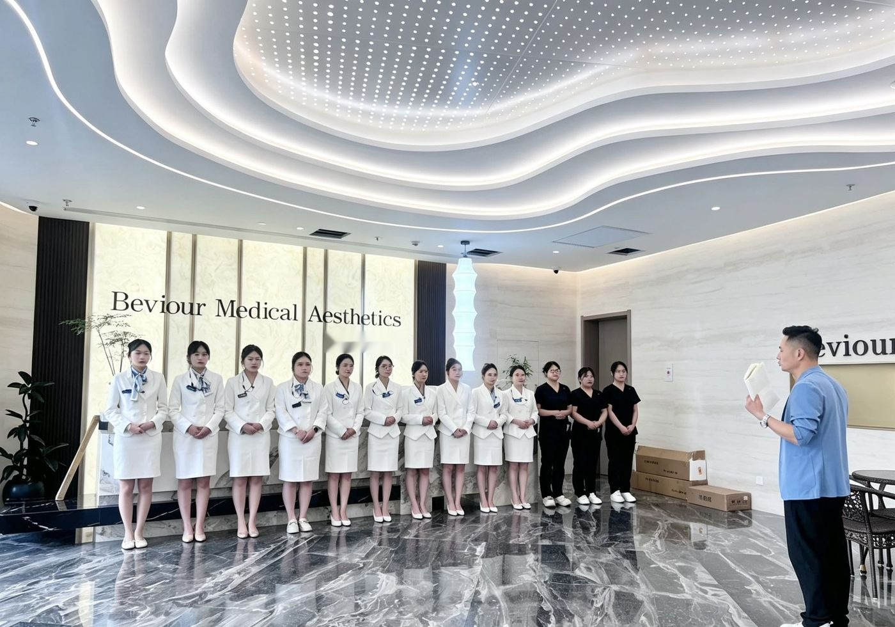
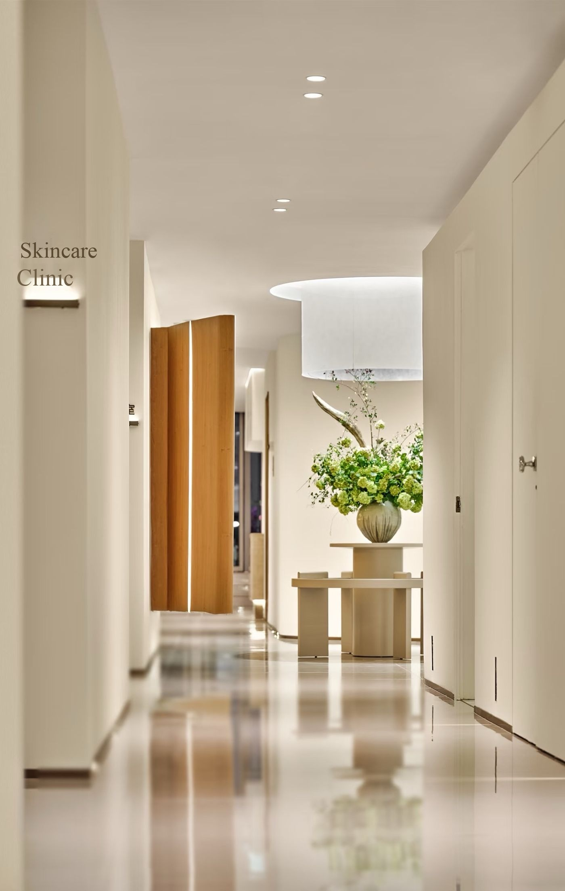
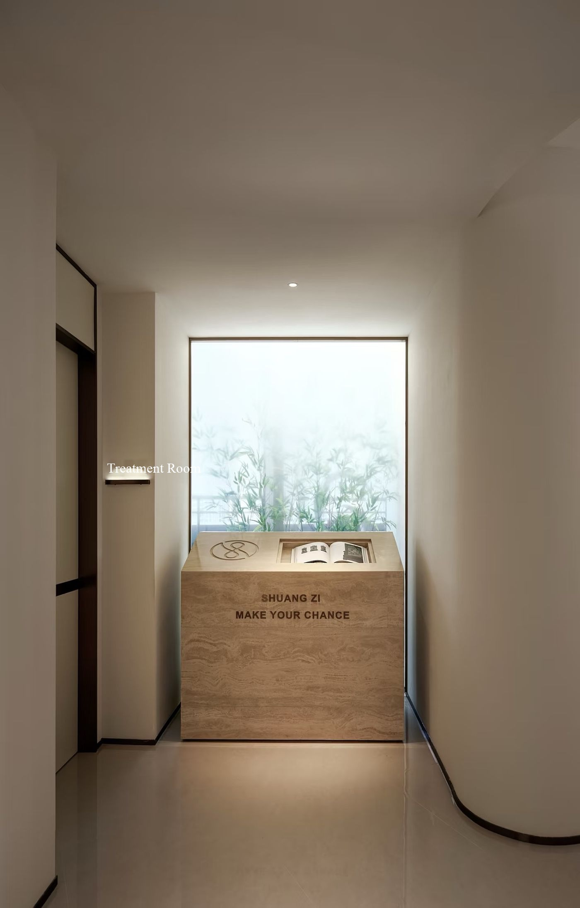

Hospital Environment



Each floor at Fanshi is organized into dedicated functional zones,
providing one-stop consultation, medical examination, surgery, post-operative recovery and support care throughout.
The hospital includes a dedicated International Client Service Center, specialty operating rooms, a dental treatment area, a skin management center and a post-operative recovery center,
with a clear spatial flow that demonstrates how Fanshi delivers a seamless, fully connected integrated aesthetic care system within one medical space.

Professional interpreters are provided, along with end-to-end itinerary planning including airport pickup, consultation, hotel, travel and dining experiences. Personalized consultation and service for international patients ensure comfort and convenience.

A modern health screening center with fast service, a relaxing lounge and comprehensive medical check-ups.

An expert medical team specializing in advanced eye care and safe, beautiful breast augmentation, delivering trustworthy results

An expert team collaborates to provide personalized surgery focused on advanced facial contouring for the best results.

A relaxed and comfortable environment to lift your mood and enhance your experience as you become more beautiful

Private wards include a personal TV and computer, with experienced medical staff providing 24-hour nursing support and space for friends to visit, so you can enjoy your recovery and heal safely, quickly and comfortably.

Exclusive Fanshi Petit Skin Center treatments and techniques,
using authentic products and trusted methods to achieve precise, effective results.

Facial Aesthetics Guidance

A dedicated space for personalized consultations covering plastic surgery, dermatology, dentistry and health management.

Equipped with advanced technology and strict safety systems and backed by 15 years of professional medical experience, we provide one-on-one personalized care.

A dedicated space for orthodontics and implants, with advanced treatments for a healthy, confident smile.

A welcoming lobby for patients and visitors with a comfortable waiting area,
and a comfortable café that creates a pleasant, relaxing atmosphere.

Systematic post-op care and treatment with professional recovery management for safe, smooth healing.

Dermatology specialists operating advanced lasers, with personalized one-on-one plans for safe, precise and effective skin care.
From the lobby, corridors and waiting areas to consultation rooms, dermatology, dental and CT imaging rooms, these are actual photos of Fanshi's facilities.

Fanshi specializes in high-end customized aesthetic medicine in Shanghai, creating a standalone light-luxury aesthetic space. The hospital has 30 private consultation rooms — one patient per room, completely private, with uninterrupted communication.


Fanshi's dedicated high-end private dermatology rooms are refined, quiet and completely private, with one patient per room.
Following clinical medical standards, the environment is clean and sterile and all equipment is certified and traceable, focusing on skin repair, rejuvenation and treatment of problem skin.
Using a professional medical approach to precisely improve skin quality, skin age and texture, we build a safe, refined and efficient light-luxury skin management system for discerning patients.


Fanshi provides independent light-luxury dental rooms with a sterile, standardized environment and precise, compliant and elegant equipment.
Focused on refined oral aesthetic treatment, orthodontics, whitening and oral care.
With rigorous medical standards and comfortable private spaces, we create a high-end, safe and tranquil light-luxury dental experience.



Fanshi is equipped with a professional high-definition CT imaging room, certified medical equipment and a sterile-standard space.
Precise scanning, high-definition imaging and accurate data support pre-operative assessment for maxillofacial, dental and aesthetic procedures.
Providing authoritative, scientific, precise and safe imaging evidence for diagnosis.


Fanshi carefully selects authentic first-tier light and energy anti-aging devices worldwide to build a full-layer device matrix, including Peninsula Ultra, Thermage, Ultraformer, Peninsula Ultrasound and Golden Microneedle.
All devices are officially verifiable with one machine, one code traceability, operated exclusively by certified physicians who customize combination plans based on skin type and aging severity to firm, smooth lines and lift at every layer.
The Fanshi Facility Guide shows how the hospital's main spaces support the patient journey — from consultation and examination to surgery, recovery and aftercare.
Consultation & Planning
Related Facilities
International Center, Fanshi VIP Center and Specialty Centers
Patient Support
Personalized consultation, interpretation assistance and treatment planning support for local and international patients
Examination & Specialty Care
Related Facilities
Examination Center, Eye & Breast Specialty Center, Nose Surgery & Facial Contour Center
Patient Support
Connecting medical examination with specialty treatment areas before surgical or treatment planning
Surgery & Treatment
Related Facilities
Surgery Center, Dental Center, Dermatology and Fanshi Health Center
Patient Support
Dedicated spaces for surgery, dental, dermatology and non-surgical aesthetic treatments
Recovery & Aftercare
Related Facilities
Private Recovery Rooms and the Good Post-Op Care & Recovery Center
Patient Support
Supporting recovery through private wards, nursing support and systematic post-operative care services

Committed to enhancing every patient's wellbeing
By delivering personalized aesthetic plans,
we promise trust and reliability built on safety and expertise.

With extensive clinical experience and academic knowledge,
our specialist doctors and experts
consider each patient's unique needs and characteristics to deliver the best results.

Across every life stage, we provide the most effective treatments to preserve each patient's beauty.
We stay by your side and take lifelong responsibility for your beauty,
fulfilling our mission as a haven of beauty.